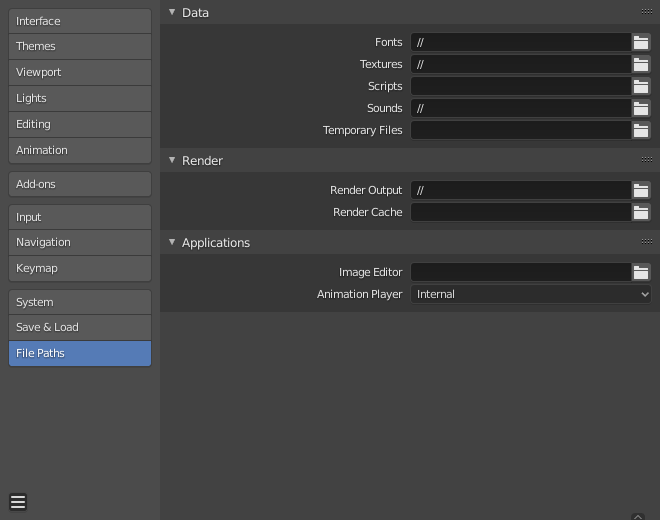

文件路径¶
偏好设置 中的 文件 部分允许你配置自动保存偏好设置，并为blend文件、渲染图像等设置默认文件路径。
各种各样的外部文件可以通过以下的选项来定位:

偏好设置文件路径部分。¶
Hint
默认路径 // 指的是当前打开的 .blend 文件所在的文件夹(有关详细信息，参见 相对路径 )。
数据¶
- 字体
Default location to browse for text object font files.
- 纹理
浏览图像纹理的默认位置。
- 脚本
An additional location to search for Python scripts.
默认情况下，Blender会在几个目录(平台相关)中查找脚本。通过在偏好设置中设置用户脚本路径，可以使用其他目录。这可以用于存储你自己的脚本和插件，与当前的Blender版本无关。
你需要在此路径中创建特定的子文件夹，这些子文件夹与Blender安装目录中的
scripts文件夹的结构相匹配。存在时将使用以下子目录：
startup/此文件夹中的模块将在启动时导入。
addons/此处的插件将列在插件偏好设置中。
modules/此文件夹中的模块可以由其他脚本导入。
presets/此文件夹中的预设将添加到现有预设中。
Note
You have to restart Blender for all changes to the users scripts to take effect.
- 声音
浏览声音文件的默认位置。
- 临时文件
存储临时文件的位置，保留为空使用系统临时目录(有关详细信息，参见 临时目录)。
渲染¶
- 渲染输出
保存渲染图像/视频的位置。
- 渲染缓存
缓存渲染图像的存储位置。
应用¶
- 图像编辑器
用于图像编辑的外部程序的路径。